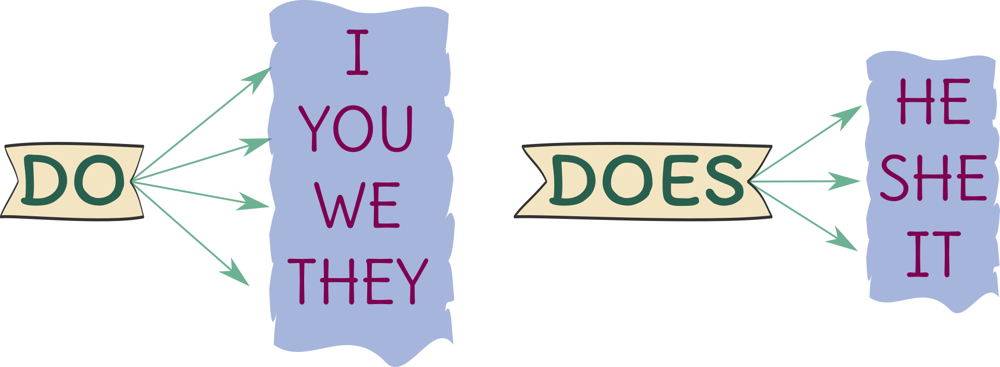

Describe las acciones que ocurren en el momento en que estás hablando o que son parte de tu rutina diaria. Dentro de este tiempo verbal también se encuentran las actividades que pueden programarse, así como las situaciones permanentes que no son cuestionables.
Debes de considerar que el simple present puede emplearse en oraciones que no solo afirmen ciertas acciones, también en aquellas que niegan algún suceso.
El verbo to do o to does se traduce como hacer al español. Así como el verbo to be, to do varía de forma en tiempo presente dependiendo con qué pronombre se conjuga.
Usamos Do con los pronombres I, you, we y they. Does con los pronombres he, she e it.
En inglés no se usa el signo de interrogación al iniciar la pregunta (¿) porque en realidad no es necesario debido a que la misma estructura indica en donde inicia la interrogación.
Do you wake up early?
¿Tú te despiertas temprano?
Doesn't she leave work late?
¿Ella no sale tarde del trabajo?
Para usar en negativa el present simple con cualquier verbo que sea diferente al to be, usamos el auxiliar do not o does not, normalmente contraídos.
Don’t es la contracción de do y not. Doesn’t es la contracción de does y not
You don't know how to drive
No sabes conducir
She does'nt teach the german
Ella no enseña alemán
El verbo mantiene la forma en infinitivo a excepción con los pronombres singulares en tercera persona (He - She - It)
En estos últimos se coloca al verbo una -S ó -ES dependiendo de su terminacion
They clean the office
Ellos limpian la oficina

We go to the gym
Nosotros vamos al gimnasio
Al igual con el verbo To Do el verbo Have tiene una variación dependiendo del pronombre con el que se conjuga. SOLO SE APLICA EN LA FORMA AFIRMATIVA
| Pronombre | To Have |
|---|---|
| I | Have |
| You | Have |
| He | Has |
| She | Has |
| It | Has |
| We | Have |
| They | Have |
Sara Alejandra Martinez Moreno
Carlos Andrés Cristancho Muñoz
saramartinez1607@gmail.com
cacristancho722@misena.edu.co